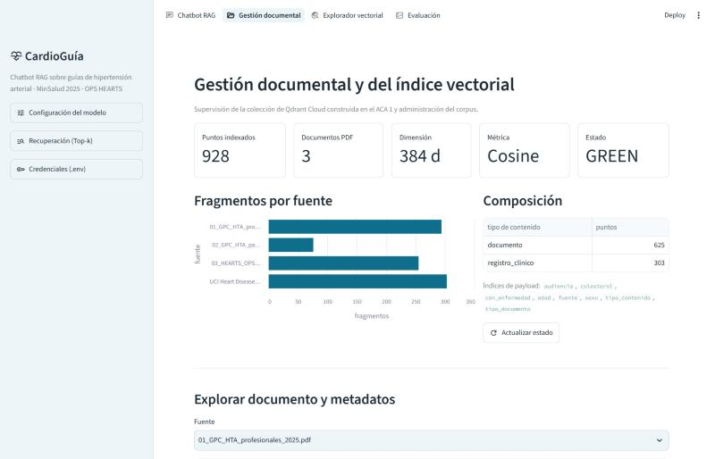
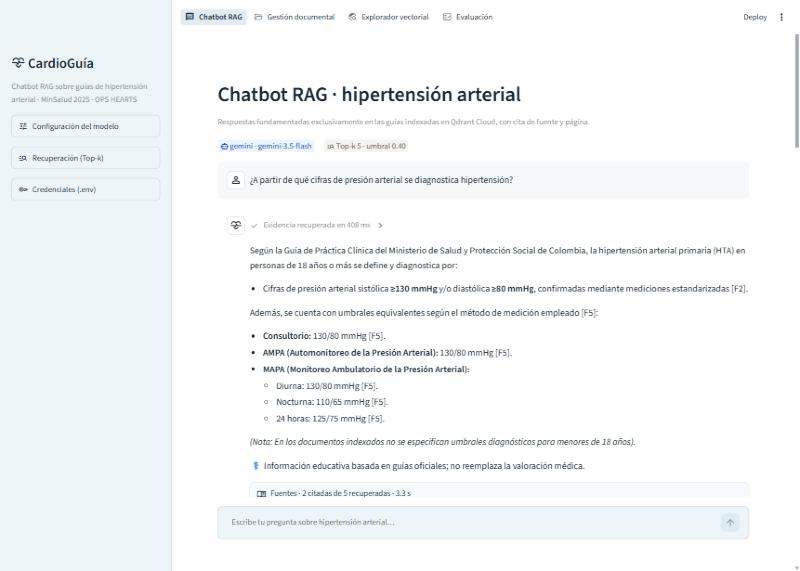

salud_cardiaca_rag con índices de payload (fuente, audiencia, tipo, edad, sexo…).| Opción | Por qué |
|---|---|
| Gemini 3.5 Flash (API) ✔ | Capa gratuita, baja latencia, excelente español, sin infraestructura |
| Groq · Llama 3.3 70B | Alternativa cloud abierta (cambiar LLM_PROVIDER) |
| Ollama · Gemma 3 (local) | Privacidad total y sin costo por token |
| Parámetro | Valor | Justificación |
|---|---|---|
| temperature | 0,2 | Fidelidad sobre creatividad |
| top_p / max tokens | 0,9 / 2048 | Menos deriva; incluye tokens de razonamiento |
| thinking_level | low | Síntesis de contexto: ~23 s → 2–9 s |
| Top-k / umbral | 5 / 0,40 | Calibrado: dominio vs. fuera de dominio |
.env / st.secrets, excluidas por .gitignore; la app solo muestra "cargada".

Google. (2025). Gemini API documentation. https://ai.google.dev/gemini-api/docs
Janosi, A., Steinbrunn, W., Pfisterer, M., & Detrano, R. (1988). Heart disease [Conjunto de datos]. UCI Machine Learning Repository.
Lewis, P., et al. (2020). Retrieval-augmented generation for knowledge-intensive NLP tasks. NeurIPS, 33, 9459–9474.
Ministerio de Salud y Protección Social. (2025). GPC para el manejo de la hipertensión arterial primaria: actualización parcial.
Organización Panamericana de la Salud. (2019). HEARTS: protocolos de tratamiento clínico basados en la evidencia.
Qdrant Solutions GmbH. (2024). Qdrant documentation. https://qdrant.tech/documentation/
Reimers, N., & Gurevych, I. (2019). Sentence-BERT. Proceedings of EMNLP-IJCNLP.
Streamlit Inc. (2024). Streamlit documentation. https://docs.streamlit.io/